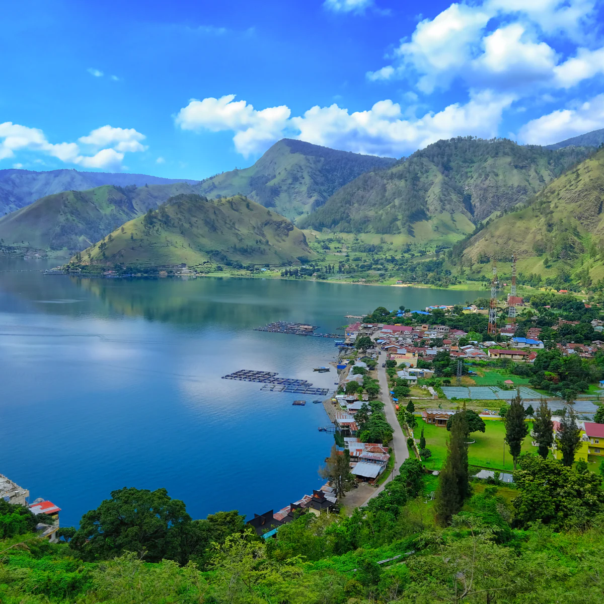

Danau Toba
Danau Toba adalah danau alami berukuran besar di Indonesia yang berada di kaldera Gunung Supervulkan. Danau ini memiliki panjang 100 kilometer, lebar 30 kilometer, dan kedalaman 508 meter. Danau ini terletak di tengah pulau Sumatra bagian utara dengan ketinggian permukaan sekitar 900 meter.
